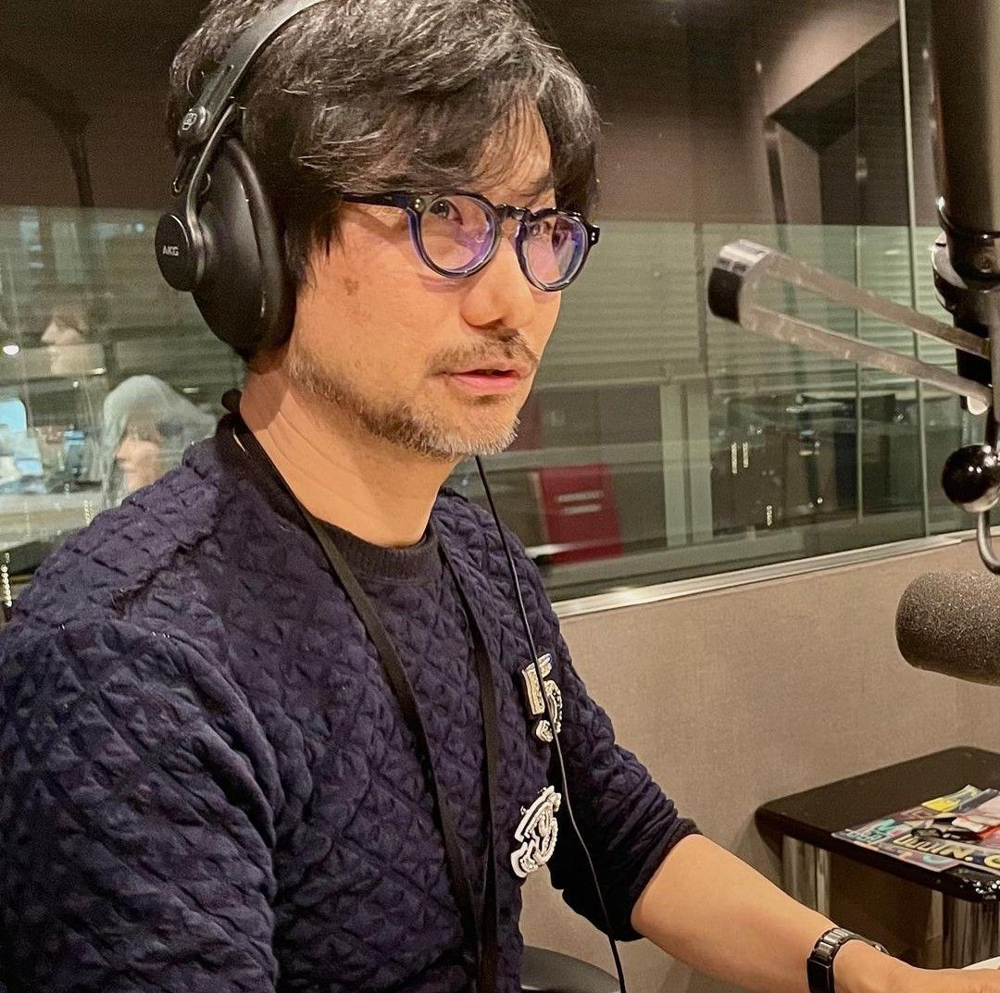

I am a Back-End Developer and systems architect based in Tokyo, Japan, with a passion for creating complex, interconnected digital worlds. Just as a "strand" connects people, I believe the back-end is the invisible thread that ties a user's experience to the reality of the data.
My work focuses on building deep, cinematic server-side logic and robust infrastructures that can withstand any load. I don't just write code; I craft digital experiences that challenge the boundaries of what a database can do. 70% of my body is made of movies, but 100% of my logic is built on clean, efficient, and innovative code.
I design complex server-side environments that prioritize narrative flow and system stability, ensuring every "player" in the system has a seamless experience.
Specializing in asynchronous data handling and real-time synchronization, I create connections between users that feel organic and impactful.
I have a deep respect for the foundations of tech, specializing in refactoring legacy systems into modern, tactical masterpieces without breaking the core logic.
Implementing advanced encryption and "stealth" security measures to protect sensitive data from external breaches and unauthorized access.